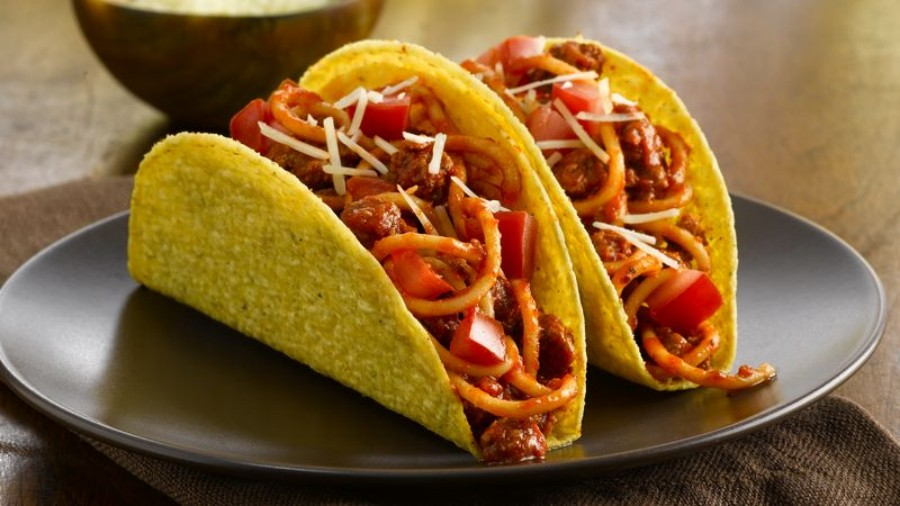

Home
Spaghetti Tacos
Spaghetti Tacos

spencer is quaking.
Ingredients
- 1 (16 ounce) package angel hair pasta
- 1 (28 ounce) jar spaghetti sauce
- 1 (5.8 ounce) package crisp taco shells
- ¼ cup grated Parmesan cheese
Directions
- Fill a large pot with lightly salted water and bring to a rolling boil over high heat. Once the water is boiling, stir in the angel hair pasta, and return to a boil. Cook the pasta uncovered, stirring occasionally, until the pasta has cooked through, but is still firm to the bite, 4 to 5 minutes. Drain well in a colander set in the sink.
- Return the pasta to the pot, and pour the sauce over the pasta; mix thoroughly until reheated. Place the taco shells into a microwave oven in a stack, and fan the stack out to a circular shape so the edges of the taco shells overlap slightly. Cook on High until warmed and crisp, 30 to 45 seconds. Fill the warm taco shells with the pasta mixture. Sprinkle pasta filling of each shell with about 1 teaspoon of Parmesan cheese to serve.
.